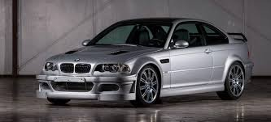
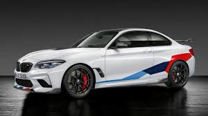

El predecesor de BMW fue la empresa Rapp Motorenwerke GmbH, fundada en 1913 por Karl Rapp. Cambiaron el nombre en abril de 1917, en primer lugar a BMW GmbH (sociedad limitada) para terminar en BMW AG, un año más tarde tras su conversión en sociedad anónima. El ingeniero Max Friz destacó en la joven empresa por desarrollar en 1917 un motor de avión de alta compresión, gracias a lo cual se pudo reducir la pérdida de prestaciones en las alturas. Esta innovación tuvo tal aceptación que BMW recibió un pedido de 2.000 motores por parte de la administración del ejército prusiano. El 17 de junio de 1919 se alcanzó el récord de altura de 9.760 metros con un BMW IIIa. El final de la Primera Guerra Mundial y el Tratado de Versalles pareció ser la fase final de la empresa, ya que el tratado prohibía la fabricación durante 5 años de motores de avión, por aquel entonces el único producto de BMW. En 1922 Camillo Castiglioni, accionista principal de la compañía abandonó la empresa para irse a Bayerische Flugzeugwerke AG (BFW), llevándose también los derechos de la marca BMW. La empresa BFW era originaria de la empresa Gustav-Otto-Flugzeugwerk, que fundó el 7 de marzo de 1916 Gustav Otto, hijo de Nikolaus August Otto, inventor del motor de combustión. El 7 de marzo de 1916 se considera, en la descripción de la historia de la empresa, como fecha oficial de fundación de BMW. Con la salida de Castiglioni los Bayerische Flugzeugwerke (BFW) dejarían lugar a BMW. La empresa que se llamara hasta entonces BMW paso a llamarse Süddeutsche Bremsen-AG y después Knorr-Bremse, empresa industrial de importancia en el sector de los frenos.
E36
M5

WIKI
INDEX